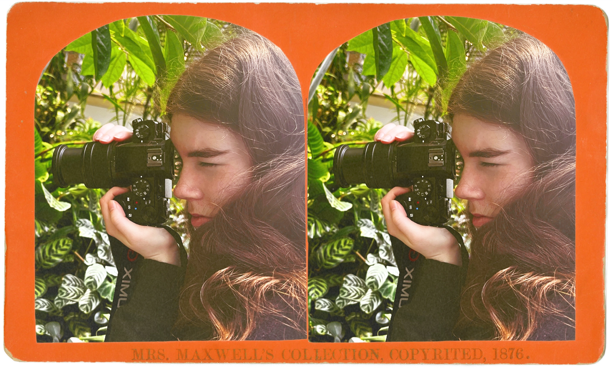

Growing up transiently, I found that exchanging stories helped me forge cross-cultural connections and understanding. This led me to study Post-Production at the Colorado Film School and pursue a Bachelor of Media Studies at the University of British Columbia, where I'm now in my final year. As the Video Production Assistant at Vancouver's Beaty Biodiversity Museum, I've spent three years producing & editing engaging digital content — from social media to the Researcher's Revealed Documentary Series.
© 2025 Morrison Tulloch